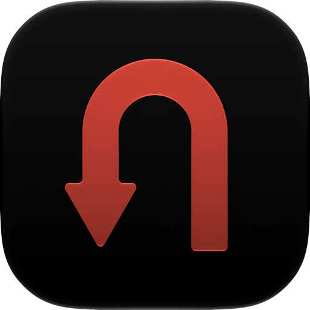

<!doctype html>
<html><head><meta charset="utf-8"><title>Direction 3: the U-turn</title>
<link rel="stylesheet" href="common.css">
<style>
/* The app icon's own mark (Support/icon/build.py, w = 520 centred on frame 2), as a road three frames wide.
   Pop-ups ride it up, round and back out; the phone in the hollow is never touched. */
body{background:linear-gradient(180deg,#131316,#000 70%)}
.h{font-size:212px}
.lock{position:absolute;left:100px;top:150px;display:flex;align-items:center;gap:36px;font-weight:700;font-size:92px;letter-spacing:-.03em}
.lock img{width:156px;height:156px;border-radius:36px;box-shadow:0 0 0 2px rgba(255,255,255,.14)}
.list{position:absolute;left:100px;top:1300px;font-weight:600;font-size:62px;line-height:1.55;letter-spacing:-.02em;color:rgba(255,255,255,.62)}
.list i{font-style:normal;color:#ff4a42;margin-right:26px}
.cut{border-radius:64px;box-shadow:0 60px 120px -30px rgba(0,0,0,.8),0 0 0 2px rgba(255,255,255,.12)}
</style></head>
<body>
<svg class="abs" width="3960" height="2868" viewBox="0 0 3960 2868" style="left:0;top:0">
  <defs><linearGradient id="g" x1="0" y1="0" x2="0" y2="1"><stop offset="0" stop-color="#f23d33"/><stop offset="1" stop-color="#cf2620"/></linearGradient></defs>
  <path fill="url(#g)" d="M 3020 3000 L 2500 3000 L 2500.00 982.00 A 520.00 520.00 0 0 0 1460.00 982.00 L 1460.00 1655.40 A 65.00 65.00 0 0 0 1525.00 1720.40 L 1649.30 1720.40 A 65.00 65.00 0 0 1 1705.66 1817.78 L 1256.36 2599.89 A 65.00 65.00 0 0 1 1143.64 2599.89 L 694.34 1817.78 A 65.00 65.00 0 0 1 750.70 1720.40 L 875.00 1720.40 A 65.00 65.00 0 0 0 940.00 1655.40 L 940.00 982.00 A 1040.00 1040.00 0 0 1 3020.00 982.00 Z"/>
  <path fill="none" stroke="rgba(255,255,255,.34)" stroke-width="14" stroke-dasharray="110 90" stroke-linecap="round" d="M 2760 2900 L 2760 982 A 780 780 0 0 0 1200 982 L 1200 1700"/>
</svg>
<script src="parts.js"></script>
<script>
const on = (h) => document.body.insertAdjacentHTML("beforeend", h);
const at = (cx, cy, rot) => `left:${cx - 210}px;top:${cy - 155}px;transform:rotate(${rot}deg)`;
// the pop-ups on the road: going up, turning, heading back out
on(popWin("YOU\nWON!", "#ffd60a", at(2760, 1300, -5)));
on(popWin("FREE\nPRIZE", "#3ee07a", at(2481, 384, -50)));
on(popWin("CLICK\nHERE", "#ffffff", at(1500, 367, -128)));
on(popWin("SPIN\n& WIN", "#ffd60a", at(1200, 1250, -184)));
on(phone("", "--k:1.85;left:1551px;top:1010px", streamScreen()));
on(`<div class="lock">Undirect</div>`);
on(`<div class="h" style="left:96px;top:420px">Pop-ups\nget\nturned\nback.</div>`);
on(`<div class="list"><div><i>↩</i>Fake download buttons</div><div><i>↩</i>Pop-under tabs</div><div><i>↩</i>Hijacked players</div></div>`);
on(`<div class="h" style="left:1480px;width:1000px;top:560px;font-size:150px;text-align:center;line-height:1">The video\njust plays.</div>`);
on(`<div class="h" style="left:3120px;top:420px;font-size:196px">Your tap\nstays\nyours.</div>`);
on(popupCut(16, 196, 408, 328, 2.35, "left:2915px;top:1640px;background:#1c1c1e"));
</script>
</body></html>
